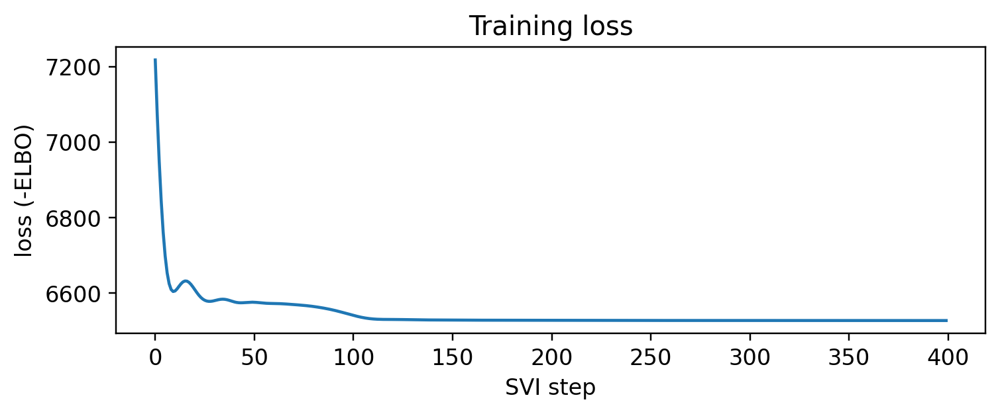
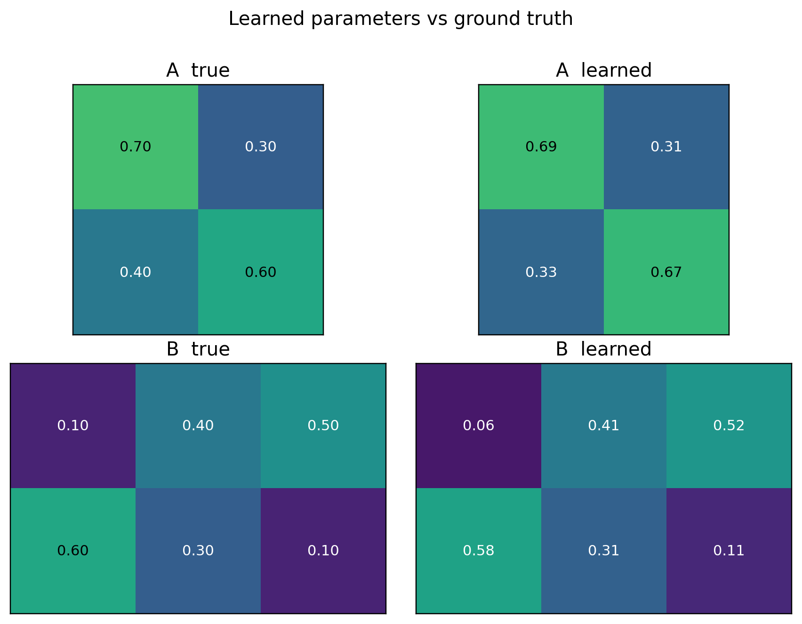
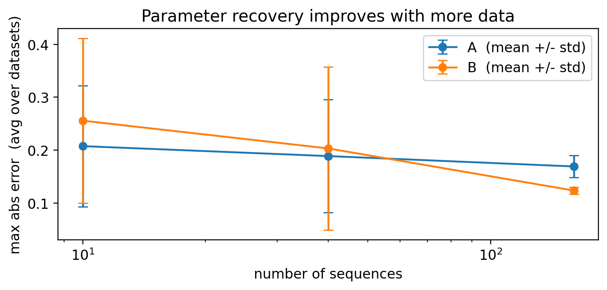

Learning HMM parameters from data: the discrete case
In the first post we hard-coded the rain/sun HMM – we knew the initial, transition, and emission probabilities \(\pi, A, B\) and used them to simulate, score, and decode. The more useful question is the inverse: given only a pile of observations, can we estimate \(\pi, A, B\)?
To check ourselves honestly, we will:
fix known parameters,
generate data from them,
throw the parameters away and try to learn them back with Pyro,
compare the recovered parameters to the truth.
Everything is done with Pyro’s stochastic variational inference (SVI). The neat part: the exact summation over hidden states we wrote as the forward algorithm last time is reused here, automatically, inside the learning loop.
Code
import itertoolsimport torchimport pyroimport pyro.distributions as distfrom pyro.ops.indexing import Vindexfrom pyro.infer import SVI, TraceEnum_ELBO, config_enumeratefrom pyro.infer.autoguide import AutoDelta, init_to_samplefrom pyro import poutineimport numpy as npimport pandas as pdimport matplotlib.pyplot as plt%matplotlib inline%config InlineBackend.figure_format ='retina'pyro.set_rng_seed(0)plt.rcParams.update({"figure.dpi": 110, "font.size": 11})
/Users/nipun/git/hmm/.venv/lib/python3.13/site-packages/tqdm/auto.py:21: TqdmWarning: IProgress not found. Please update jupyter and ipywidgets. See https://ipywidgets.readthedocs.io/en/stable/user_install.html
from .autonotebook import tqdm as notebook_tqdm
The data-generating model
We reuse the rain/sun setup: hidden weather (Rainy, Sunny) drives an observed activity (walk, shop, clean). These are the true parameters we will pretend not to know.
Code
states = ["Rainy", "Sunny"]obs_names = ["walk", "shop", "clean"]K, M =len(states), len(obs_names)pi_true = torch.tensor([0.6, 0.4])A_true = torch.tensor([[0.7, 0.3], [0.4, 0.6]])B_true = torch.tensor([[0.1, 0.4, 0.5], [0.6, 0.3, 0.1]])def generate(num_seqs, T, seed=1): g = torch.Generator().manual_seed(seed) seqs = torch.zeros(num_seqs, T, dtype=torch.long)for s inrange(num_seqs): z = torch.multinomial(pi_true, 1, generator=g).item()for t inrange(T):if t >0: z = torch.multinomial(A_true[z], 1, generator=g).item() seqs[s, t] = torch.multinomial(B_true[z], 1, generator=g).item()return seqssequences = generate(num_seqs=60, T=100, seed=1)print("observation dataset:", tuple(sequences.shape), "(sequences x days)")print("first sequence as activities:")print(" ", " ".join(obs_names[i][:4] for i in sequences[0, :18].tolist()), "...")
observation dataset: (60, 100) (sequences x days)
first sequence as activities:
shop clea clea shop clea clea shop clea clea clea walk clea shop clea clea walk shop clea ...
A learnable model
Last time \(\pi, A, B\) were constants. Now they are unknown quantities we put priors on and infer. We use symmetric Dirichlet priors (a Dirichlet is the natural prior over a probability vector), then let the data pull them toward the truth.
The hidden states \(z_t\) are still discrete and still marked enumerate="parallel", so Pyro sums over them exactly – that summation is the forward algorithm from post 1. We never see the states; we only fit the parameters that best explain the observations.
For the inference engine we use:
an AutoDeltaguide, which keeps a single best (MAP) point estimate of each parameter – so this is essentially gradient-based EM;
TraceEnum_ELBO, which builds the loss by enumerating (summing out) the hidden states;
init_to_sample, to start the parameters at random draws from the prior and break the symmetry between states.
Code
def model(sequences, K, M): S, T = sequences.shape# global parameters: now random variables with priors probs_init = pyro.sample("probs_init", dist.Dirichlet(torch.ones(K))) probs_trans = pyro.sample("probs_trans", dist.Dirichlet(torch.ones(K, K)).to_event(1)) probs_emit = pyro.sample("probs_emit", dist.Dirichlet(torch.ones(K, M)).to_event(1))with pyro.plate("seqs", S, dim=-1): z =Nonefor t in pyro.markov(range(T)): probs = probs_init if t ==0else Vindex(probs_trans)[..., z, :] z = pyro.sample(f"z_{t}", dist.Categorical(probs), infer={"enumerate": "parallel"}) # summed out exactly pyro.sample(f"x_{t}", dist.Categorical(Vindex(probs_emit)[..., z, :]), obs=sequences[:, t])def learn(sequences, K, M, steps=400, lr=0.05, seed=0): pyro.clear_param_store(); pyro.set_rng_seed(seed) guide = AutoDelta(poutine.block(model, expose=["probs_init", "probs_trans", "probs_emit"]), init_loc_fn=init_to_sample) svi = SVI(model, guide, pyro.optim.Adam({"lr": lr}), TraceEnum_ELBO(max_plate_nesting=1)) losses = [svi.step(sequences, K, M) for _ inrange(steps)] est = guide.median(sequences, K, M)return est, losses, guide# Gradient EM has local optima, so for the data-size study below we run a few# random restarts and keep the fit with the lowest final loss.def learn_best(sequences, K, M, steps=300, lr=0.05, restarts=3): best =Nonefor r inrange(restarts): est, losses, _ = learn(sequences, K, M, steps=steps, lr=lr, seed=r)if best isNoneor losses[-1] < best[0]: best = (losses[-1], est)return best[1]
Training
Each SVI step nudges the parameters to make the observed activities more likely. We watch the loss (negative ELBO, i.e. roughly negative log-likelihood) fall and flatten out.
Code
est, losses, guide = learn(sequences, K, M, steps=400, lr=0.05)plt.figure(figsize=(7, 3))plt.plot(losses)plt.xlabel("SVI step"); plt.ylabel("loss (-ELBO)")plt.title("Training loss"); plt.tight_layout(); plt.show()

Did we recover the parameters?
One subtlety first: label switching. Nothing in the model names one state “Rainy” – the priors are symmetric, so the learner is free to call our Rainy state “state 1” or “state 0”. The recovered parameters are correct only up to a permutation of the states. Before comparing, we line the learned states up with the true ones by matching their emission rows.
fig, axes = plt.subplots(2, 2, figsize=(8, 6))for ax, mat, title in [(axes[0,0], A_true, "A true"), (axes[0,1], A_e, "A learned"), (axes[1,0], B_true, "B true"), (axes[1,1], B_e, "B learned")]: im = ax.imshow(mat.numpy(), vmin=0, vmax=1, cmap="viridis")for (i, j), v in np.ndenumerate(mat.numpy()): ax.text(j, i, f"{v:.2f}", ha="center", va="center", color="w"if v <0.6else"k", fontsize=10) ax.set_title(title); ax.set_xticks([]); ax.set_yticks([])fig.suptitle("Learned parameters vs ground truth", y=1.0)plt.tight_layout(); plt.show()

More data, better estimates
A maximum-likelihood estimator is consistent: with more data it should approach the truth. Two things make a single run a noisy witness to that – the error from one dataset is itself a random draw, and gradient EM can settle into a local optimum. So we (i) keep the best of a few random restarts, and (ii) average the recovery error over several independently generated datasets at each size. The averaged transition/emission error then falls cleanly as the data grows. (\(\pi\) is left out of this plot – it is estimated from only as many points as there are sequences, so it stays noisy regardless.)
Code
sizes = [10, 40, 160]n_datasets =5errs = {"A": np.zeros((len(sizes), n_datasets)), "B": np.zeros((len(sizes), n_datasets))}for i, n inenumerate(sizes):for d inrange(n_datasets): data = generate(num_seqs=n, T=60, seed=100+ d) e = learn_best(data, K, M, steps=180, restarts=2) p = align_states(e["probs_emit"], B_true) errs["A"][i, d] = (e["probs_trans"][p][:, p].detach() - A_true).abs().max() errs["B"][i, d] = (e["probs_emit"][p].detach() - B_true).abs().max()plt.figure(figsize=(7, 3.4))for k in ("A", "B"): m, s = errs[k].mean(1), errs[k].std(1) plt.errorbar(sizes, m, yerr=s, marker="o", capsize=4, label=f"{k} (mean +/- std)")plt.xscale("log"); plt.xlabel("number of sequences")plt.ylabel("max abs error (avg over datasets)")plt.title("Parameter recovery improves with more data")plt.legend(); plt.tight_layout(); plt.show()

Sanity check: decode with the learned parameters
A final end-to-end test. We generate a fresh sequence (keeping its hidden weather aside), then run Viterbi decoding – once with the true parameters, once with the learned ones – and see that the learned model recovers almost the same hidden weather.
Code
from pyro.infer import infer_discretedef gen_with_states(T, seed): g = torch.Generator().manual_seed(seed) zs, xs = [], [] z = torch.multinomial(pi_true, 1, generator=g).item()for t inrange(T):if t >0: z = torch.multinomial(A_true[z], 1, generator=g).item() zs.append(z); xs.append(torch.multinomial(B_true[z], 1, generator=g).item())return zs, torch.tensor(xs)def decode(pi, A, B, obs):def m(obs): z =Nonefor t in pyro.markov(range(obs.shape[0])): probs = pi if t ==0else Vindex(A)[..., z, :] z = pyro.sample(f"z_{t}", dist.Categorical(probs), infer={"enumerate": "parallel"}) pyro.sample(f"x_{t}", dist.Categorical(Vindex(B)[..., z, :]), obs=obs[t]) d = infer_discrete(config_enumerate(m, "parallel"), first_available_dim=-1, temperature=0) tr = poutine.trace(d).get_trace(obs)return [int(tr.nodes[f"z_{t}"]["value"]) for t inrange(obs.shape[0])]true_z, test_obs = gen_with_states(T=200, seed=123)dec_true = decode(pi_true, A_true, B_true, test_obs)dec_learned = decode(pi_e, A_e, B_e, test_obs)acc_true = np.mean(np.array(true_z) == np.array(dec_true))acc_learned = np.mean(np.array(true_z) == np.array(dec_learned))print(f"decoding accuracy with TRUE params: {acc_true:.1%}")print(f"decoding accuracy with LEARNED params: {acc_learned:.1%}")print(f"agreement between the two decodings : {np.mean(np.array(dec_true)==np.array(dec_learned)):.1%}")
decoding accuracy with TRUE params: 76.0%
decoding accuracy with LEARNED params: 72.0%
agreement between the two decodings : 95.0%
Wrap-up
With one model function and Pyro’s SVI, we recovered \(\pi, A, B\) from observations alone – no forward-backward or Baum-Welch code written by hand, just priors + enumeration + gradient descent. We also met label switching, the harmless permutation ambiguity that shows up whenever you learn latent-state models.
Next in the series:
continuous emissions – replace the categorical activity with a real-valued (Gaussian) observation, the setting that matters for sensors and power meters;
then the factorial HMM for energy disaggregation (NILM), where several appliances sum into one meter reading – written without any Kronecker / product-state machinery, and decoded in time linear in the number of appliances.